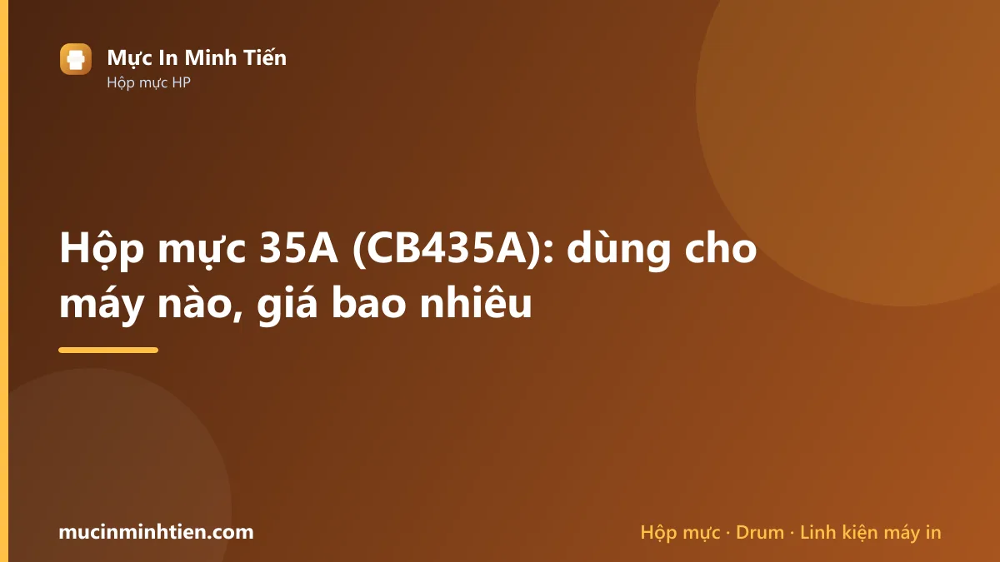
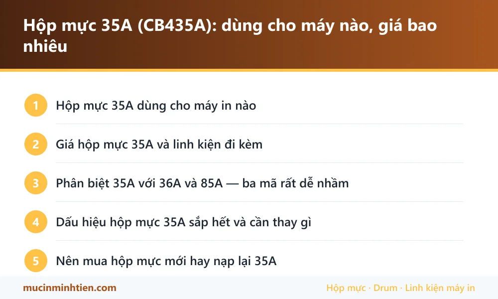

Hộp mực 35A (CB435A): dùng cho máy nào, giá bao nhiêu

Hộp mực 35A (mã HP CB435A) dùng cho HP LaserJet P1005 và P1006, tương đương Canon Cartridge 312 cho LBP 3050, 3100, 3150. Một hộp đầy in được khoảng 1.500 trang văn bản.
Hộp mực 35A dùng cho máy in nào
| Dòng máy | Model cụ thể | Ghi chú |
|---|---|---|
| HP LaserJet | P1005, P1006 | Máy in đen trắng nhỏ gọn cho bàn làm việc cá nhân |
| Canon LBP | 3050, 3100, 3150, 3018, 3010 | Canon gọi là Cartridge 312, cùng phôi với 35A |
Giá hộp mực 35A và linh kiện đi kèm
Bảng dưới là hàng đang có tại kho 77 Bắc Hải, Phường Diên Hồng, TP.HCM, giá tham khảo cho khách lẻ. Đây là giá thật trong bảng giá công khai, không phải giá quảng cáo.
| Sản phẩm | Nhóm | Giá tham khảo |
|---|---|---|
| Chíp HP 1005-1006-1505-35A - Chíp 35A | Linh kiện khác | 10.000 đ |
| Combo 10 cặp (20 cái) Ron từ 35A/78A/83A/85/337/36/88 - Ron từ 35 | Linh kiện khác | 10.000 đ |
| Bộ 10 chíp 35A ,CA-NON 312, cho HP P1005,P1006, P1007, 1008, P1505, M1522, M1120 - Bộ 5 chíp 35A | Linh kiện khác | 30.000 đ |
| Cặp Bạc phíp 35A dùng cho máy in HP 1102, 1212, 1132, 1606, 1566, 1536, 1005, 1006 - bạc phíp 35A | Linh kiện khác | 30.000 đ |
| Combo 5 Trục sạc 35A-85A-83A-78A-36A - sạc 35A | Linh kiện khác | 80.000 đ |
| Chíp sharp 235AT dùng cho máy photo sharp AR-5618/AR-5620/AR-5623S/D/N - Chíp 235AT | Mực & linh kiện máy photocopy | 49.000 đ |
| Trục Sạc dùng cho hộp mực HP 107A , máy in M135a, M137fdn, M135w, M107w (W1107A)( dùng cho phôi CH ) - Sạc 107A | Hộp mực & mực in máy in | 40.000 đ |
| Combo 2 chai Mực đổ HP 107w nạp cho Hộp mực máy in HP 107a/ 107w/ 135a/ 135w - Mực nạp HP 107 | Hộp mực & mực in máy in | 50.000 đ |
| Combo 2 chai Mực đổ HP 107w nạp cho Hộp mực máy in HP 107a/ 107w/ 135a/ 135w(80g) - 107 | Hộp mực & mực in máy in | 50.000 đ |
| Combo Mực đổ +chíp HP 107w nạp cho Hộp mực máy in HP 107a/ 107w/ 135a/ 135w(80g) - 2937_121221642 | Hộp mực & mực in máy in | 55.000 đ |
| Combo 5 chai Mực nạp 35A -36-85-83-78-1005-1006-071 - 35A | Hộp mực & mực in máy in | 100.000 đ |
| Mực In Laser 85A-35A cho máy Canon 6030, 6030W, HP 1102, 1102W, 1132MFP, 1212MFP - Mực laser 85 | Hộp mực & mực in máy in | 119.000 đ |
| Mực nạp + chíp HP 335A dùng cho máy in HP Pro MFP 438n/M440n/M440nda (W1335A) - Mực nạp HP 335 | Hộp mực & mực in máy in | 150.000 đ |
| Mực hộp laser HP 107A Black (W1107A) - Dùng cho Máy in HP 107a/ 107w/ 135a/ 135w (không chíp) - HP107 | Hộp mực & mực in máy in | 190.000 đ |
| Hộp mực in RT 35A dùng cho máy HP P1005 / HP P1006 Canon 3050 , Canon 3100 - Hộp mực 35A | Hộp mực & mực in máy in | 250.000 đ |
| Hôp mực HP 335A dùng cho máy in HP Pro MFP 438n/M440n/M440nda (W1335A) - HP 335A | Hộp mực & mực in máy in | 299.000 đ |
| Combo 2 Trống drum máy in hp 107A - 107w - 135a - 135w - Drum 107A | Drum / Trống máy in | 80.000 đ |
| Combo 5 Drum trống mực in 35A-1005-1006-1505 - 1005-1006-1505 | Drum / Trống máy in | 85.000 đ |
| Combo 3 Drum trống mực in Mitsu 35A-1005-1006-1505 - Drum 35A mitsu | Drum / Trống máy in | 111.000 đ |
| Trục từ dùng cho hộp mực HP 107A , máy in M135a, M137fdn, M135w, M107w (W1107A)( dùng cho phôi CH ) - Từ 107A | Trục từ | 45.000 đ |
| COMBO 5 cây Trục từ 35A-36A-85A-78A-83A-1005-1006-1505 - từ 35A | Trục từ | 80.000 đ |
| Seal 35A-10cái - Seal 35A | Chip & Seal | 35.000 đ |
| combo 5 Chip U9A1 Đa Năng chip cho HP CB435A/CB436A/CE285A/CE278A/CE505A/CF280A/CE255A/CC364A - Chip U9A1 Đa Năng chip cho HP CB435A/CB436A | Chip & Seal | 75.000 đ |
| Mực hộp laser HP 107A Black (W1107A) - Dùng cho Máy in HP 107a/ 107w/ 135a/ 135w (có chip) - Mực 107 | Chip & Seal | 200.000 đ |
| Gạt mực ( gạt lớn ) dùng cho máy HP 107a, máy in M135a, M137fdn, M135w, M107w (W1107A)( dùng cho phôi CH ) - Gạt lớn 107A | Gạt mực | 20.000 đ |
| Combo 5 Gạt nhỏ HP 35A/85A/36A/78A/83A/79A CA 328/337 - Gạt nhỏ 35A | Gạt mực | 30.000 đ |
| Combo 5 Gạt lớn HP 35A/85A/36A/78A/83A/79A CA 328/337 - Gạt lớn 35A | Gạt mực | 40.000 đ |
| Gạt lớn+nhỏ 35A-85A-78A-83A-5cặp - Gạt lớn+gạt nhỏ 35A | Gạt mực | 75.000 đ |
| Quả đào tách giấy 35A/85A/36A HP P1005/1102 - Quả đào 35A/85A/36A | Giấy in & Ruy băng | 25.000 đ |
| Load giấy 35A dùng cho máy in Hp 1005, 1006,1102,1212,Canon 6030, 6230 - Load giấy 35A | Giấy in & Ruy băng | 35.000 đ |
| Nhông lô ép / nhông sấy HP 1005/1006/1007/1008/35A (nhông thẳng) - Nhông sấy 35A | Lô sấy, lô ép & linh kiện sấy | 50.000 đ |
| Lô ép 35A dùng cho HP LaserJet P1005 / P1006 , Canon 3050 / 3100 - Lô ép 35A | Lô sấy, lô ép & linh kiện sấy | 100.000 đ |
| Lô ép 107 dùng cho hộp mực HP 107a, máy in M135a, M137fdn, M135w, M107w (W1107A) - Lô ép 107 | Lô sấy, lô ép & linh kiện sấy | 140.000 đ |
Không thấy mã cần tìm? Dùng công cụ tra cứu theo model máy hoặc xem bảng giá đầy đủ 773 mã.
Phân biệt 35A với 36A và 85A — ba mã rất dễ nhầm
Đây là nhầm lẫn phổ biến nhất khi mua mực. Ba mã 35A, 36A và 85A dùng chung một kiểu phôi, nhìn bằng mắt gần như giống hệt nhau, nhưng lắp sai máy thì máy không nhận hoặc bản in lỗi.
| Mã | Mã HP | Máy dùng | Số trang |
|---|---|---|---|
| 35A | CB435A | P1005, P1006 | ~1.500 |
| 36A | CB436A | P1505, M1120, M1522 | ~2.000 |
| 85A | CE285A | P1102, M1132, M1212 | ~1.600 |
Vì cùng phôi nên linh kiện rời như gạt mực, trục từ, bạc phíp thường dùng chung được cho cả ba mã. Đó là lý do trong bảng giá bên dưới bạn sẽ thấy nhiều linh kiện ghi kèm cả 35A/85A/36A.
Dấu hiệu hộp mực 35A sắp hết và cần thay gì
Máy dùng 35A không có màn hình báo phần trăm mực, nên phải nhìn bản in mà đoán:
- Nhạt dần từ một bên sang — mực đang cạn và dồn lệch. Lắc ngang hộp mực 5–6 lần dùng thêm được vài chục trang.
- Nhạt đều toàn trang, lắc không ăn thua — trục từ đã yếu, thay trục từ là hết.
- Sọc đen dọc lặp lại đúng khoảng cách — drum xước, phải thay drum.
- Lem mực dọc mép trang — gạt mực mòn hoặc mẻ.
Với dòng P1005 và P1006, máy đã cũ nên bạn nên kiểm tra thêm các nguyên nhân gây sọc trước khi quyết định thay hộp mực mới.
Nên mua hộp mực mới hay nạp lại 35A
35A là mã rất đáng nạp lại: linh kiện rời có sẵn và rẻ, phôi bền, thợ nào cũng làm được. Kho hiện có đủ gạt mực, trục từ, drum, chip và seal cho mã này.
Nạp lại khi vỏ hộp còn kín và bản in trước đó vẫn sắc. Thay linh kiện khi bản in bắt đầu có sọc hoặc lem. Chỉ nên mua hộp mới khi vỏ đã nứt hoặc hộp đã nạp quá nhiều lần và mỗi lần chỉ dùng được vài trăm trang.
Một lưu ý riêng cho P1005 và P1006: đây là máy đã ngừng sản xuất từ lâu. Nếu máy còn chạy tốt thì cứ nạp mực dùng tiếp, nhưng đừng đầu tư hộp mực chính hãng đắt tiền cho máy sắp hết vòng đời.

Câu hỏi thường gặp về hộp mực 35A
Hộp mực 35A có dùng được cho máy HP P1102 không?
35A và Canon 312 có thay thế cho nhau được không?
Hộp mực 35A in được bao nhiêu trang?
Vì sao máy P1005 in vài trang lại phải lắc hộp mực?
Bài viết liên quan
- Máy in bị sọc đen dọc: 5 nguyên nhân và cách khắc phục
- Cách chọn mực in đúng máy, bền máy và tiết kiệm
- Phân biệt mực in chính hãng và mực trôi nổi
- Hộp mực 85A: dùng cho máy nào, giá bao nhiêu
- Hộp mực 107A: dùng cho máy nào, giá bao nhiêu
- Tra hộp mực và linh kiện theo model máy in
- Nạp mực máy in tận nơi TP.HCM từ 80.000đ